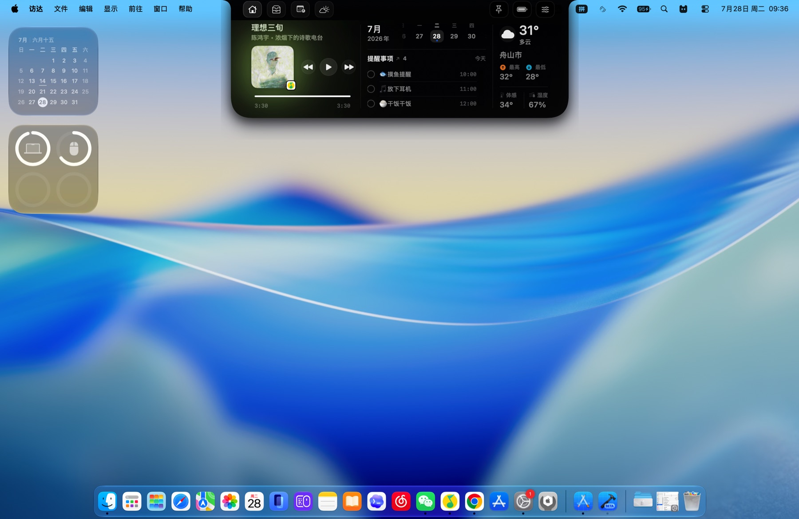
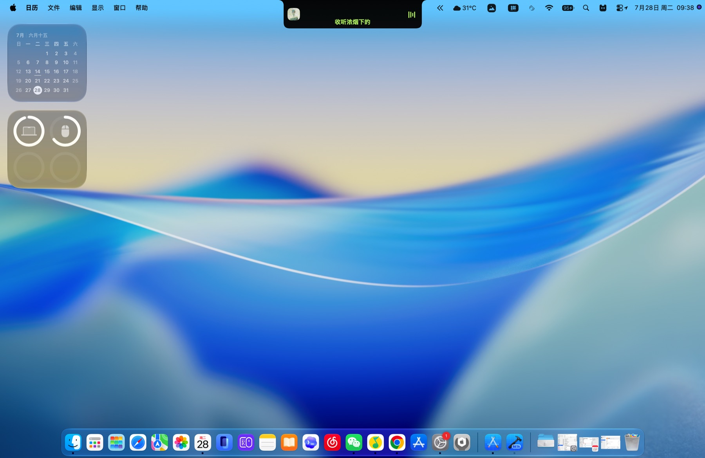

01
今天，从这里开始
音乐、月历、提醒、天气与设备状态集中在同一视线内，一次抬眼就能掌握。
- 多模块自由切换
- 实时天气与日程
- 设备状态一目了然

专为 Mac 刘海而生
音乐、天气、日程、提醒、暂存架与剪贴板，
都在你下一次抬眼的位置。
支持 Apple 芯片与 Intel Mac
移动鼠标，让灯跟上你
CHATNOTCH IN MOTION · 动态演示
它住在屏幕顶部，不打断正在进行的工作。需要时展开，完成后安静收起。
ONE NOTCH, EVERYDAY TOOLS · 一个刘海，装下日常
把高频能力放进统一、安静、随叫随到的顶部空间。
音乐、月历、提醒、天气与设备状态集中在同一视线内，一次抬眼就能掌握。

专辑封面、播放控制与歌词都停靠在刘海下方，不离开当前应用也能掌握节奏。

隔空投送、文件暂存与剪贴板历史合在一处，拖入、取回都更快。

日历与提醒事项并排呈现，今天的安排、时间和待办都在屏幕正上方。

不展开完整面板时，正在播放、天气与系统状态仍会以精简形态留在刘海附近。

封面、进度、歌词与常用控制，随音乐自然展开。
下一场会议、今日提醒和实时天气，一抬眼就知道。
文件与图片拖入即存，用完即走，不打断当前工作。
最近复制的内容随手可取，减少重复寻找的摩擦。
LOCAL FIRST · 本地优先
无需创建账号，不含广告，也不使用营销跟踪。暂存架与剪贴板内容默认保存在你的 Mac 本地。
查看完整隐私政策DOWNLOAD FOR MAC · 下载
ChatNotch 1.0 · 支持 Apple 芯片与 Intel Mac
建议使用 macOS 13 Ventura 或更高版本